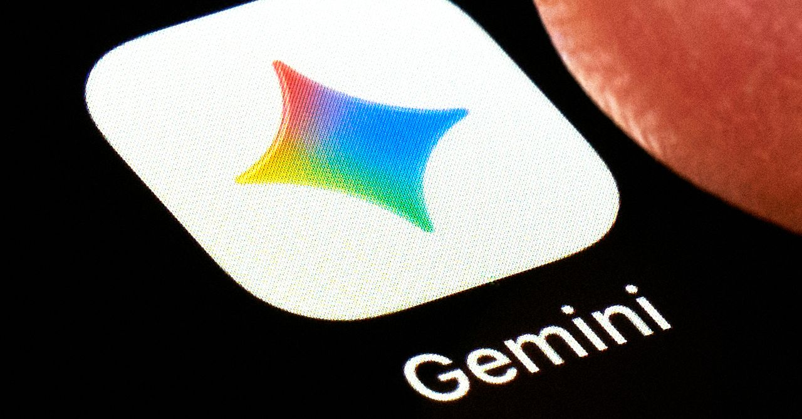
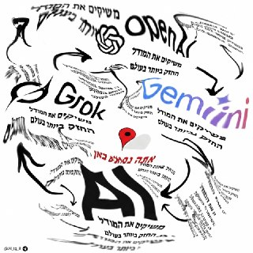
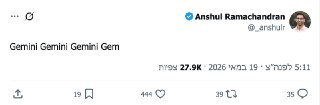
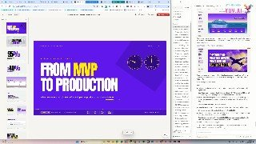

Calcalist Techמאומת חלקית23.05.2026, 07:23
OpenAI מדווחת שמודל חשיבה חדש הצליח להפריך השערה של פאול ארדש מ־1946 בבעיית מרחק היחידה במישור. מתמטיקאים בכירים מעניקים תמיכה ראשונית, אך הרקע של הכרזות שגויות בעבר מחייב זהירות.
אימות 2
OpenAI מדווחת שמודל חשיבה חדש הצליח להפריך השערה של פאול ארדש מ־1946 בבעיית מרחק היחידה במישור. מתמטיקאים בכירים מעניקים תמיכה ראשונית, אך הרקע של הכרזות שגויות בעבר מחייב זהירות.

I used the Gemini app to generate lifelike s featuring a digital clone of myself. Google sees this as the future of creation. I’m still creeped out.
Global affairs chief Chris Lehane wants to tone down the debate over AI’s societal impacts—and get states to pass laws that won’t derail OpenAI’s meteoric rise.

The nine-member panel took only two hours to return a verdict in favor of OpenAI on Monday, which the judge quickly adopted as her own final decision.

חברת התוכנה קליק-אפ מפטרת 22% מעובדיה ומציגה מודל מהפכני: השקעה ב'מהנדסי 100x' שירוויחו שכר של מיליון דולר בשנה בזכות שילוב סוכני בינה מלאכותית.

Gemma 4 מואץ פי 3 בזכות מנגנון שחוזה כמה טוקנים במקביל במקום לייצר אותם בזה אחר זה, כך שהתשובות אמורות להגיע מהר יותר בלי פגיעה באיכות או ברמת היכולת.
Anthropic צפויה לעבור לרווחיות תפעולית לראשונה, עם זינוק חד בהכנסות ברבעון השני של 2026 והיערכות להנפקה אפשרית לפי שווי של יותר מ-60 מיליארד דולר.

ElevenLabs מציגה כלי שמלביש ממשק קולי על סוכני צ'אט קיימים בלי להחליף את מודל השפה, ה-RAG או הלוגיקה. הוא תומך בתמלול וסינתזת דיבור בעשרות שפות, עובד עם OpenAI, Anthropic ו-Gemini, ומכוון לצוותים שרוצים להוסיף קול לסטאק קיים בלי מיגרציה.

גוגל מציגה שורת עדכוני AI סביב ג׳מיני: Gemini 3.5 Flash יהפוך לברירת המחדל באפליקציה ובחיפוש, Gemini Omni יתמקד ביצירת ועריכת וידאו, ויכולות חדשות יגיעו ליוטיוב ולדוקס. במקביל SynthID יורחב לזיהוי תוכן AI גם בחיפוש ובכרום.

גוגל מתחילה להפיץ את העיצוב החדש של ג׳מיני באפליקציה ובווב, כולל בורר מודלים מעודכן. במקביל, אפליקציית AI Studio כבר הופיעה בחנות אנדרואיד עם אפשרות להרשמה מוקדמת.
פרויקט Human Operator של MIT מציג אבטיפוס לביש שבו AI מתרגם ראייה ובקשה קולית לפקודות EMS שמפעילות שרירים ביד ובפרק כף היד. המערכת, שזכתה בהאקתון MIT Hard Mode 2026, כבר הדגימה ציור ונגינה בפסנתר באמצעות יד המשתמש.

כתב הטכנולוגיה החל להגיש בחדשות 12 פינה שבועית על שימושים מעשיים ב-AI, שתשודר בימי חמישי במהדורת היום עם עמליה דואק ועופר חדד.

משתמש מתאר כיצד השתמש ב-Claude כדי להמיר עיצוב חריטה שנוצר ב-AI לקובץ מתאים לתוכנת צורף, וחסך לדבריו שעות של עבודה ידנית.

התביעה של מאסק נגד סם אלטמן נדחתה בגלל התיישנות, לא בגלל הכרעה בשאלה אם אלטמן פעל כשורה בהפיכת OpenAI למסחרית.
Runway מציגה את Aleph 2.0, כלי AI לעריכת וידאו שמאפשר לשנות אובייקטים, רקעים ותאורה באמצעות פרומפט, ולהחיל שינוי מפריים אחד על כל הסרטון. הכלי מציע תצוגה מקדימה ויצירת וידאו עד 1080p ועד 30 שניות.

פינת ה-AI השבועית מציגה דרכים שבהן הורים יכולים להשתמש בכלי בינה מלאכותית לחיזוק מיומנויות אצל ילדים, מסיפורי השלכה ומשחקים ועד חוברות תרגול, צביעה וספרי ילדים מותאמים.

נראה שנקבל גם מודל חדש מגוגל - Gemini 3.5 👀 הלכתי להכין את המפה... בינה מלאכותית בטלגרם - t.me/AI_tg_il

ידעתם שסידאנס יודע לקבל סרטונים תמונות ואפילו אודיו - ולשלב הכל ביחד עם AI? פה העליתי סרטון אמיתי מהרחפן ותמונה אמיתית של צ׳יטה - וסידאנס יצר לי אותה רצה בווידאו האמיתי!

הפוסט מציג טענת "חינם", אבל בלי אימות ברור מול המוצר הרשמי, ולכן צריך לראות בזה טענה שדורשת בדיקה.

גוגל תקיים הערב את כנס I/O, ובינתיים רומזת דרך סרטונים למודל וידאו חדש. לצד זאת, נראה שעיצוב חדש לאפליקציית ג׳מיני כבר נפרס לחלק מהמשתמשים.
גוגל מציגה שינוי רחב בחיפוש: יותר תשובות גנרטיביות, התאמה אישית, עבודה מול מידע חזותי וטאבים פתוחים, וכלים חדשים לקניות אונליין. סוכני AI לניטור מידע בזמן אמת כבר משולבים, אך עדיין רק במסגרת בדיקה.

הפוסט מציג טענת "חינם", אבל בלי אימות ברור מול המוצר הרשמי, ולכן צריך לראות בזה טענה שדורשת בדיקה.

תנועה מרשימות בקוד פתוח. המודל מתאים במיוחד למי שמחפש אלטרנטיבה חזקה וגמישה ליצירת סרטוני AI ישירות מהמחשב (לבעלי כרטיסי מסך חזקים 😉). 🔗 קישור למודל ב-Hugging Face:

לרחפן 360 של dji יש ai מובנה שיודע לזהות אובייקטים וליקוב אחריהם. לקחתי את ה-ai שלו לסיבוב עם הופ הצ'יטה. קבלו איזה יפה יצא!

הפוסט מציג טענת "חינם", אבל בלי אימות ברור מול המוצר הרשמי, ולכן צריך לראות בזה טענה שדורשת בדיקה.

אנדריי קרפתי מצטרף לאנתרופיק! בינה מלאכותית בטלגרם - t.me/AI_tg_il

גוגל הציגה מאיץ חדש ל-Gemma 4 שמאפשר יצירת טוקנים במקביל בעזרת מודל קטן נוסף, ומדווחת על שיפור מהירות של עד פי 3.
הניסוח הזהיר יותר הוא: מחוקקים בניו יורק הגישו מחדש הצעת חוק שתאסור על מלכ"רים הרשומים במדינה להעביר כספים לפעילות ישראלית מעבר לקו הירוק. היוזמת דיאנה מורנו טוענת שהמהלך נועד לעצור שימוש בהטבות מס למימון התנחלויות והפרות זכויות אדם.
הניסוח הזהיר יותר הוא: טראמפ הודיע שלא יגיע לחתונת בנו דונלד טראמפ ג'וניור בבהאמה, בנימוק שעליו להישאר בבית הלבן על רקע המגעים והמתיחות מול איראן.
לפי CBS, בממשל טראמפ נערכים לאפשרות של חידוש התקיפות באיראן אם טהרן תדחה את ההצעה האמריקנית האחרונה, אך טרם התקבלה החלטה.
הפוסט מנוסח בצורה שיווקית ומנופחת. העובדות שכדאי לקחת ממנו הן: לפי ה"ניו יורק פוסט", אזרח עיראקי שעבר הכשרה בידי משמרות המהפכה האיראניים תכנן לפגוע בבתו של הנשיא לשעבר דונלד טראמפ כנקמה על חיסול קאסם סולימאני
AFM has tapped Taylor Budowich, a prominent former White House communications staffer and pro-Trump Super PAC leader. The group's debut comes immediately after House Oversight Committee Chair James Comer (R-KY) launched insider trading investigations.
The SEC’s expected regulatory framework would have provided clarity for companies looking to tokenize traditional assets like stocks.

Two papers published this week have reignited debates about the risk posed by “Q-day” to the cryptography that underpins digital assets.
Fresh inflows into XRP-linked funds and a spike in newly created wallets suggest some traders may be rotating into the token while trimming exposure to crypto’s largest assets.

Imagine having an application like Uber on your phone, but instead of a company operating in the middle, it ran completely autonomously.

עדכון קצר סביב הירוקים, שרשמו עוד תוצאה מאכזבת עם תיקו מול הפועל פ"ת מול אצטדיון חצי ריק, מבינים שאף על פי השחקנים הצעירים שמקבלים הזדמנויות, המועדון זקוק לשינוי, בעיקר בגזרת הזרים: "כולם

הפועל פתח תקוה תעלה למשחק מול מכבי ת״א במדי רטרו מעונת 99/00, בטקס שיחבר את שחקני אותה עונה לקהל ולסיום העונה הנוכחית.